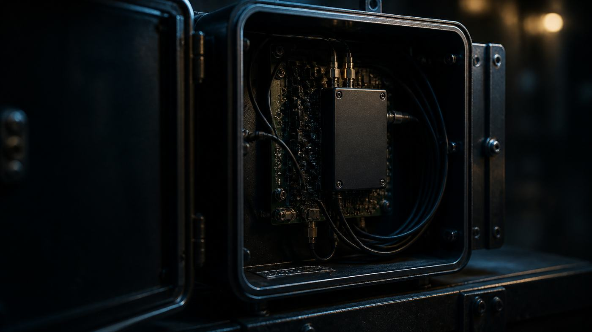

// Embedded
Shipping OTA updates you can't take back
A/B partitions, delta updates, rollback that actually works, signing, staged rollouts, and the device that has been offline for a year.

The thing that makes embedded updates different from server updates is that you cannot go look at it. A server that fails to come up after a kernel change is annoying; you have a BMC, a serial console and a person forty feet away. A device behind a NAT on a cellular modem, on a roof, or in a vehicle, is a truck roll. At any real fleet size, a bad update that bricks one percent of devices costs more than the feature you were shipping was worth.
So the design constraint is not "deliver a new image." It is "never leave a device in a state it cannot get out of by itself."
Atomicity is the whole game
The failure to design against is loss of power halfway through a write. Not a corrupted download - you can checksum that - but the moment where the old filesystem is partly overwritten and the new one is not yet complete.
An update is atomic if, at every instant, a power cut leaves the device with a complete, bootable system. There is no partial state to recover. That rules out unpacking a tarball over the running root filesystem, and it is why every serious embedded updater writes somewhere that isn't being used.
A/B partitions
The dominant answer, and the one used by Mender, RAUC and Android. Two root filesystem partitions. The device runs from A. The updater writes the new image to B, in its entirety, verifies it, then sets a bootloader flag saying "boot B next." Reboot. If B comes up and proves itself, B becomes permanent and A becomes the spare for next time.
Everything about that is recoverable. A power cut during the write to B leaves A untouched and still the active partition. A power cut after the flag is set but before the reboot completes hits the rollback path, which we'll come to.
The costs are honest and worth stating plainly:
Double the rootfs flash. On a device with 8 GB of eMMC this is a rounding error. On a device with 256 MB of NAND it may decide the whole architecture.
Data has to live elsewhere. Persistent state goes in a third partition that is never touched by the update, and everything on the rootfs must be treated as disposable. This is a discipline problem more than a technical one: someone will eventually write state into /etc or /var on the rootfs and be surprised when it vanishes.
The rootfs is not the whole system. Bootloader, device tree, and any firmware for peripheral microcontrollers are not covered by an A/B rootfs swap. Bootloader updates in particular are the genuinely dangerous ones because there is usually no second copy - plan them separately, do them rarely, and consider whether you need them at all.
Delta updates
A full rootfs image is tens or hundreds of megabytes. If the change is a 40 kB binary, sending the whole image over a metered cellular link to fifty thousand devices is expensive in a way that shows up on a finance review.
Delta updates send only the binary difference between the image the device is running and the one you want it running. Mender generates a delta artifact from two full artifacts with mender-binary-delta-generator, and the device reconstructs the target on the inactive partition from its current image plus the delta. Mender publishes typical savings in the 70–90% range. Note this is a commercial feature - it lives in the meta-mender-commercial layer and needs a Professional or Enterprise plan - which is a budget line rather than an engineering one, but decide it early because it affects your build.
The structural problem is combinatorial. A delta is specific to a source-target pair, so devices spread across six field versions means six deltas. That is why server-side generation exists: the server produces the right delta per device instead of you pre-generating a matrix. Doing it yourself, cap how far back you support delta-ing from and fall back to a full image beyond that.
Two rules make deltas work. Your builds must be reproducible, or an unchanged component produces different bytes and the delta is enormous for no reason. And verify the reconstructed image against a checksum of the target, not just the delta - a delta correctly applied to a subtly wrong source produces garbage that passes every check you did on the way in.
Proving the new image works
Setting a flag that says "boot B" is not enough. Something has to answer the question "did B actually work," and something has to act when the answer is no.
The mechanism in U-Boot is a boot counter. Mender's integration uses three variables:
upgrade_available=1 # we are mid-update; count boots
bootcount=0 # incremented by U-Boot each boot
bootlimit=1 # when exceeded, run altbootcmd insteadU-Boot increments bootcount on each boot, but only persists it when upgrade_available is set - so ordinary reboots of a committed system don't accumulate a count. If the count exceeds bootlimit, U-Boot runs altbootcmd instead of bootcmd, and altbootcmd swaps the root partition back to the old one. A device that hangs before it can clear the flag reboots, exceeds the limit, and falls back on its own. This requires CONFIG_BOOTCOUNT_LIMIT in U-Boot, and it is the single most commonly broken part of a board integration - worth testing explicitly by deliberately shipping an image that panics.
The commit is the other half. After boot, the update client clears upgrade_available and marks the new partition permanent. Everything between "kernel starts" and "commit" is the window in which rollback is still possible, and how much you put in that window is the interesting design decision.
The weak version commits as soon as the update service starts. That catches a kernel panic and nothing else. The useful version runs a health check first: is the network up, can we reach the update server, did the application start, does the sensor bus respond, does the display come up. Only then commit. Mender supports this through state scripts that run at defined transitions, and the equivalent exists in every serious updater.
Underneath all of it, enable the hardware watchdog. Not the software one - the one in the SoC that resets the chip if it isn't petted. A device wedged in a state where the kernel is alive but nothing works is the case that neither bootcount nor a health check will catch, because nothing ever reboots. systemd's RuntimeWatchdogSec wired to /dev/watchdog costs one line and saves the truck roll.
Signing, and the chain it belongs to
The update client must refuse anything it can't verify. Mender signs artifacts with a private key held on a signing system and verifies on the device with the corresponding public key, configured via ArtifactVerifyKey; if verification fails the client refuses to proceed. Every comparable system does the same thing. Turn it on - it is off by default in more deployments than anyone admits, because it works fine without it right up until it doesn't.
Signing the artifact only matters if the thing checking the signature is itself trustworthy, which is what secure boot is for: ROM verifies the bootloader, the bootloader verifies the kernel and device tree, and the running system holds the key that verifies the next artifact. A break anywhere makes the rest decorative, and closing the chain after production has started is much harder than doing it at bringup.
Two operational points get overlooked. Keep the signing key off developer laptops and off the build machine - an HSM or a locked-down signing service, with an audit trail. And support more than one verification key on the device, because key rotation is impossible otherwise; Mender's ArtifactVerifyKeys takes a list and tries each in turn, which is exactly the mechanism you need to roll a key without stranding the fleet.
Staged rollouts
You will ship a bad update. Testing catches what you thought of; the field is where you meet the hardware revision with a different flash part.
So never deploy to everything. A phased rollout deploys to a percentage, waits, then expands: 5% and hold for a day, then 15%, then the rest. Mender implements this directly and lets you abort mid-rollout. The waits are the point - most real failures are not immediate. A memory leak, a log partition filling, a thermal problem that only appears on the third day. A rollout schedule with no dwell time breaks everything simultaneously.
One detail with dynamic device groups: phase sizes are computed from group membership when the deployment is created, and don't recalculate as devices join. If your groups churn, your percentages drift.
Decide your retry policy deliberately too. Mender does not automatically retry a failed deployment, which is the right default - if the new image broke networking and rolled back, retrying in a loop turns one bad update into a fleet-wide outage. Retry the download on interruption. Retrying the deployment is a decision a person makes.
The device that comes back after a year
It happens. A unit sat in a warehouse, a site was mothballed, a customer left something unplugged. It powers on running an image from eighteen months ago and asks the server what to do. Several things quietly assume this never happens.
Certificates expire. The device's client certificate, or the CA it uses to validate your server, may have rolled over while it was dark. No connection means no update, and you have a manual recovery. Long-lived CAs, generous device identity lifetimes, and multiple trusted roots are the cheap insurance.
Clocks are wrong. A device with no RTC battery boots at the epoch, and TLS fails because the certificate isn't valid yet. Persist a "last known good time" and use it as the floor at boot, before any TLS.
Your delta chain doesn't reach back that far. Make sure the full-image path still exists and is still tested.
The old client may not speak to the new server. Keep the old endpoint working, or accept that anything older than version N is unrecoverable remotely - defensible, but make it a conscious decision and know what N is.
The test to run before you ship anything: take a device, flash the oldest image you still consider supported, set the clock to a random date, cut power in the middle of the write, then cut it again during the first boot after. If it ends up running something and talking to you, the update system works. If you haven't done that test, you don't know whether it does - you know that it hasn't failed yet.